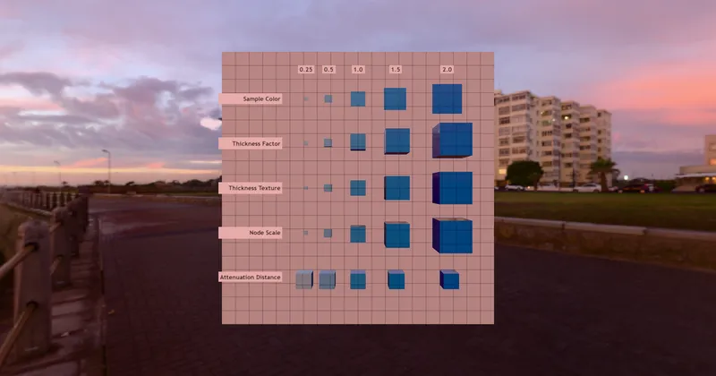

GLTF > GLTF Extensions > KHR_materials_volume
Attenuation Test - RedGPU WebGPU Example
Tests attenuation distance and color as light passes through a medium.
빛이 매질을 통과할 때의 감쇠(Attenuation) 거리와 색상을 테스트합니다.

GLTF > GLTF Extensions > KHR_materials_volume
Tests attenuation distance and color as light passes through a medium.
빛이 매질을 통과할 때의 감쇠(Attenuation) 거리와 색상을 테스트합니다.
